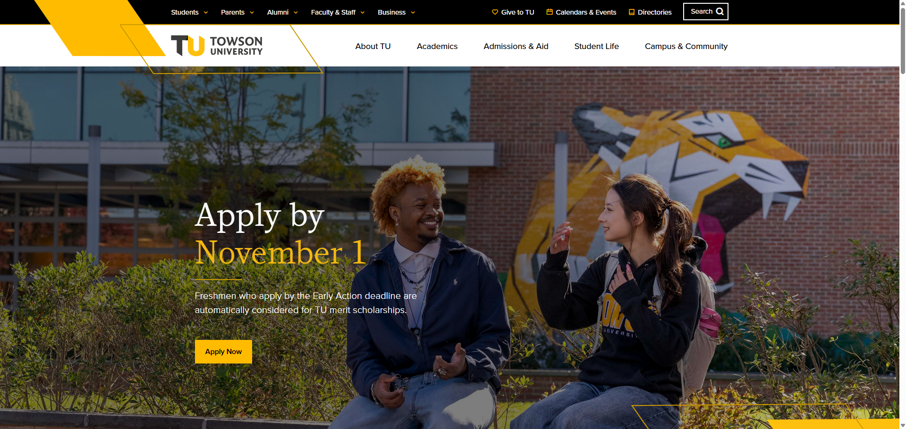
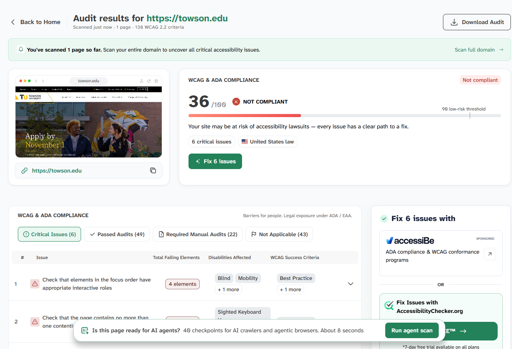

As my experience the website in organized in Linear one after one.
For example: to get into major first have to get in students in nav and major and can check majors that TU offers.
The Audit score according to the Accessibility checker is 36/100

Fig 1:Towson University, Homepage

Fig 2:Accessibility checking Towson university
It has use a crap design principle of repition and proximity:
it has its all color yellow, black and white all over the sites and
its major services are in the nave bar grouped together
Site is efficient on searvhing program and the program related things and website is preeety fast and smooth
Site is efficiency and they also have a navbar in top right corner and if its about the progaram search and curruculum
students an fine it preeety faster
The engament is preety good that is under student and majorsand
it has the focus of that major and how ca person can take that major with
The login interface of towson university is preety hard to find I searched and didn't is they had login interface directly in the
home page screen like ccbc (myccbc) it would be better.